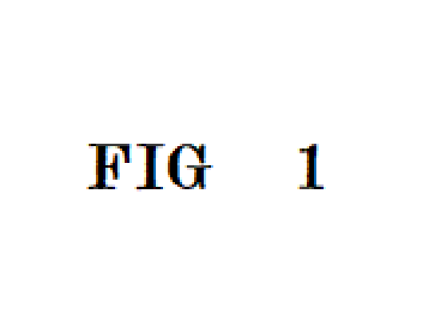

Mai multă mișcare
Vremea bună ne încurajează să ieșim din casă și să facem plimbări.
Timișoara este un oraș frumos în orice anotimp, dar primăvara are un farmec aparte. Spațiile verzi devin mai vii, temperaturile sunt plăcute, iar oamenii petrec mai mult timp afară.
Piețele, parcurile și zonele de promenadă devin locuri ideale pentru relaxare și socializare.

Primăvara aduce o atmosferă calmă și veselă. Lumina naturală este mai puternică, florile apar peste tot, iar orașul pare mai prietenos. O simplă plimbare poate deveni o experiență plăcută și relaxantă.
Vremea bună ne încurajează să ieșim din casă și să facem plimbări.
Natura și lumina naturală contribuie la o dispoziție mai bună.
Primăvara este anotimpul ideal pentru activități creative și fotografii frumoase.